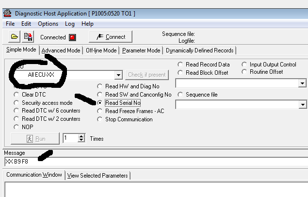

GGD-DHA ( Generic Global Diagnostic - Diagnostic Host Application ) .¶
“GGD DHA is a system used when developing systems in cars. This program contains all variables that are transferred within the car. It can access all variables and commands allowing reading and/or writing to these variables. It is also possible to read DTCs, part numbers, upload new software to the different modules etc. This system is useful when testing new systems since in VIDA you do not have access to all variables, which you have in GGD DHA, but in GGD DHA you do not get access to the technical description of how you replace parts, troubleshooting etc. However, in GGD DHA it is possible to create automatic sequences that read or write to the variables making it unnecessary to be at the computer all the time. When writing to a variable, it is possible to set the sensor values to the required values making it possible to simulate different conditions in a car even if the conditions have not occurred.”
https://drive.google.com/file/d/1Guan662vouIs1bkY1W7K2SAEcnkzm8A0/view
This software uses databases in (ddb or dds) format. After opening, you can send individual messages.
In the Volvo Diagnostic Host Application, you can save the data in text format.
Peeking in this database (P1005_(D2)_0520_TO1_050202.DDB) give some insight in how the Volvo Can messaging works.
This example is for reading the VIN number
DIAG_ITEM [NAME=VIN][SEND_ABLE=TRUE][NOTE=] [FORMAT=OTHER:2] [BASE=HEX] [VALUE=E9] [TYPE=BLOFF][INPUT=FALSE]
BEGIN
RESPONSE_ITEM [NAME=VIN .][SEND_ABLE=FALSE][NOTE=VIN] [NO_OF_BYTES=17] [OFFSET=2] [MASK=] [UNIT=.] [PRECISION=0] [SIGNED=U] [BASE=ASCII] [FORMULA=*1] [COMP_VALUE=] [DEP_RESPITEM=CHECKOK] [DEP_RESPITEM_CHECK=TRUE]
END